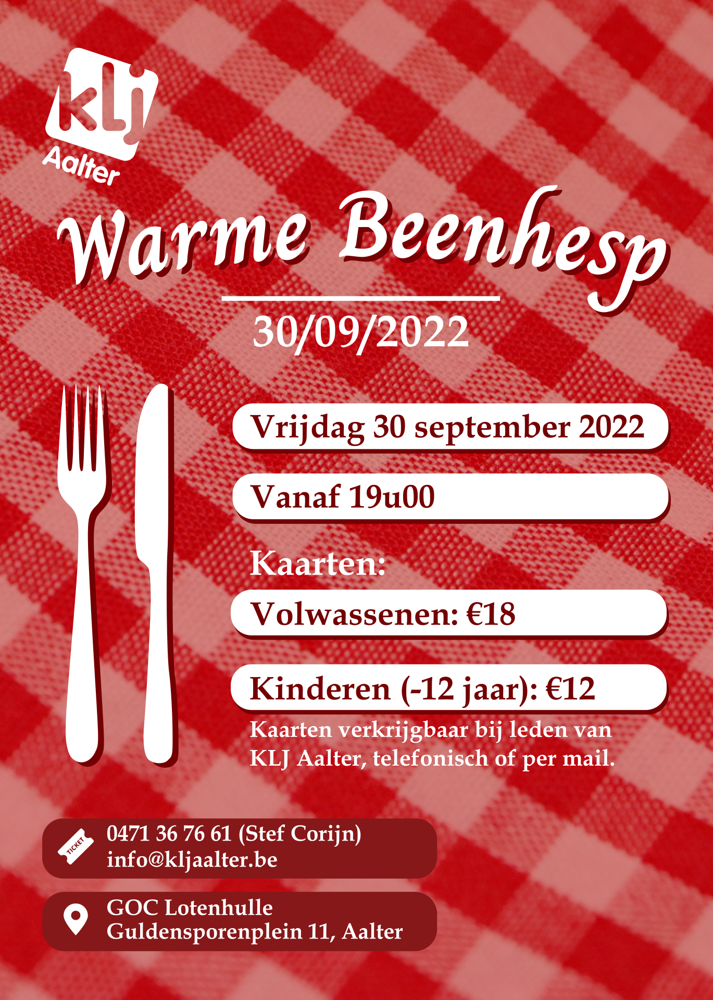
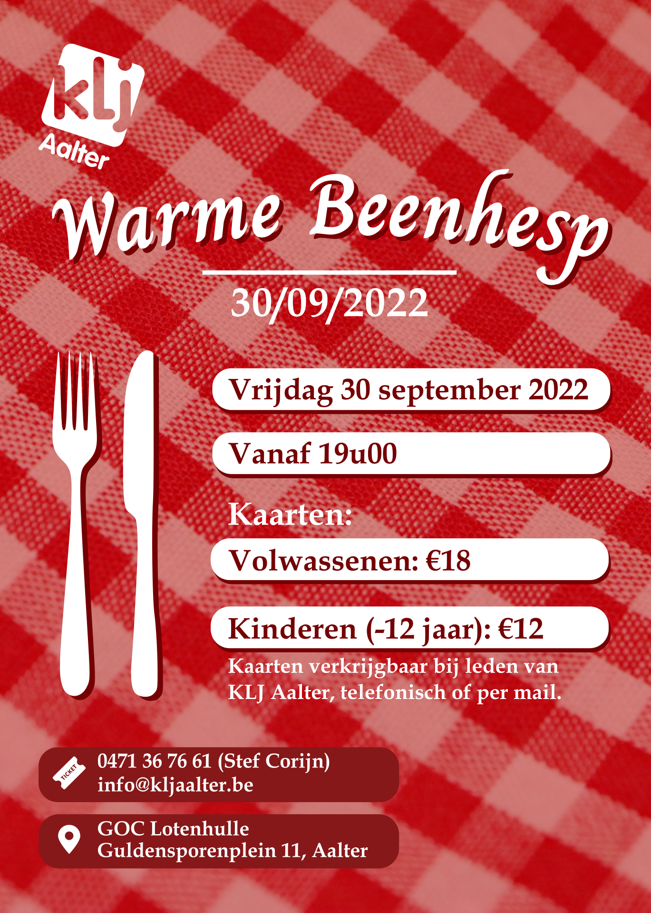

INFO
** WARME BEENHESP - 8 OKT 2021 **
Naast Back To Life Party op zaterdag 9 oktober presenteren we op vrijdag 8 oktober een Warme Beenhesp avond!
Perfect om het weekend mee in te zetten samen met familie en vrienden! Iedereen welkom vanaf 18u!
Kaarten zijn verkrijgbaar bij leden en online op https://warme-beenhesp.eventsquare.co/.
💶 16 euro all in voor volwassen, kinderen jonger dan 12 jaar betalen slechts 10 euro.
📍 GOC Lotenhulle / Guldensporenplein 11, Aalter
🍺 Streekbieren
🍺 Jupiler van ‘t vat
🍹 Cocktailbar